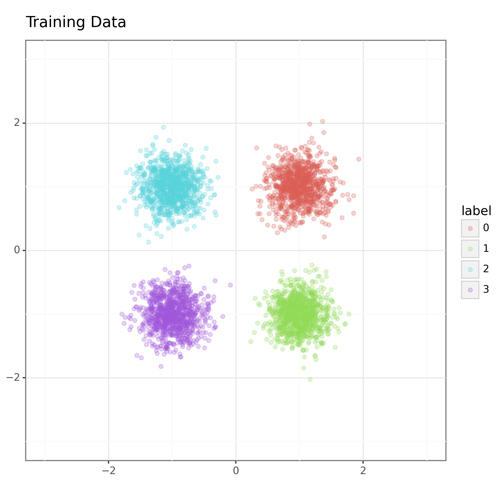
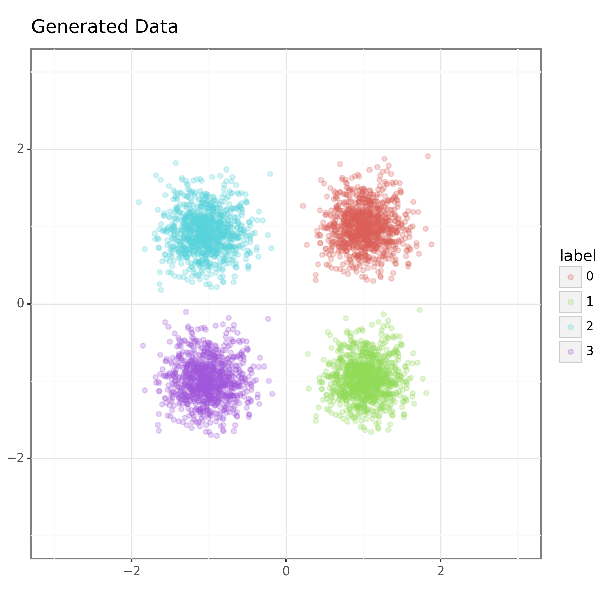
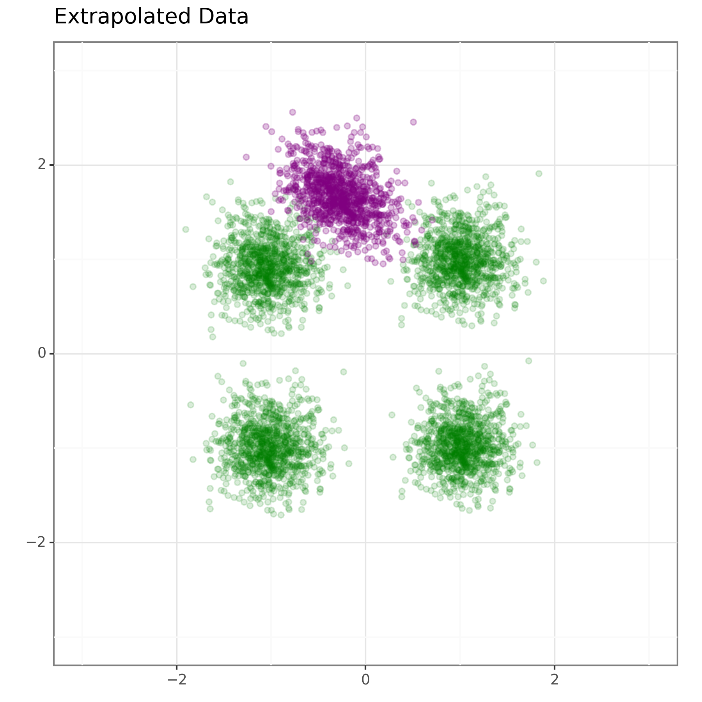

AANN 21/01/2024
Table of Contents
Conditional Real NVP
Overview
In this post, we implement a conditional version of the Real NVP (Real-valued Non-Volume Preserving) flows we saw in the last post. A conditional normalizing flow is a step towards implementing a full copy of BayesFlow.
Recall that normalizing flows are invertible mappings back and forth between a target distribution and a base distribution. The base distribution is something friendly, like a standard multivariate normal distribution (hence normalizing), and the target is the unknown distribution you care about (the data-generating process).
The idea with the conditional real NVP is that you want to be able to specify which of a family of distributions is your target using a context vector. When used for Bayesian statistics, the context vector summarizes our data, and the target distribution is the resulting posterior distribution (assuming a fixed prior distribution).
Conditional normalizing flows
Stock-standard normalizing flows
Consider a random variable \(X\) with an unknown target density \(p_X(x)\). Typically, \(X\) represents high-dimensional or complex data, such as the pixel values in an image, making it challenging to model or manipulate directly. Normalizing flows let us work with \(X\) indirectly, through a more convenient random variable \(Z\). The random variable \(Z\) comes from a simpler base distribution \(p_Z(z)\), e.g., a multivariate Gaussian. The goal is to construct an invertible function \(f\) that relates \(X\) and \(Z\) through \(X = f(Z)\). The inverse of \(f\), denoted \(g = f^{-1}\), allows us to map data from the \(X\)-space back to the \(Z\)-space.
Assuming we have the function \(g\), we can calculate the density \(p_X(x)\) in terms of the \(p_Z(z)\) via the change of variables formula:
\[ p_X(x) = p_Z(g(x)) \left|\det \mathbf{J}(x)\right|, \]
where \(\mathbf{J}(x)\) is the Jacobian of the inverse transformation \(g\). In the Jacobian, the entry \((i, j)\) represents the partial derivative \(\frac{\partial g_i(x)}{\partial x_j}\). Having \(f\) and \(g\) lets us do two important things: sample from \(p_X(x)\), by sampling from \(p_Z(z)\) and applying the transformation \(f\); and evaluate \(p_X(x)\) using the formula above.
Normalizing flows approximate \(f\) with a neural network. The network architecture must be designed so that \(f\) is invertible, the Jacobian is computationally efficient, and the \(g\) is easy to compute. Real NVP (Real-valued Non-Volume Preserving) networks have these properties.
Conditional normalizing flows
At a high level, the real NVP looks like a deep neural network composed of layers, each of which applies to only half of the input dimensions. These layers are the affine coupling blocks (ACBs). To provide a context vector to the real NVP, i.e. to parameterize the target distribution of the real NVP, we extend the ACBs to take a larger vector. This larger vector results from concatenating the output of the previous ACB with the context vector. This way, each ACB sees the context vector as part of the input. Including the context vector in this way gives us the conditional ACB as implemented in the following snippet.
class CondACB(nn.Module): def __init__(self, block_dim: int, summary_dim: int): super(CondACB, self).__init__() self.block_dim = block_dim self.summ_dim = summary_dim self.s_nn = nn.Sequential( nn.Linear(self.block_dim + self.summ_dim, 32), nn.ELU(), nn.Linear(32, 32), nn.ELU(), nn.Linear(32, self.block_dim), nn.ELU(), ) self.b_nn = nn.Sequential( nn.Linear(self.block_dim + self.summ_dim, 32), nn.ELU(), nn.Linear(32, 32), nn.ELU(), nn.Linear(32, self.block_dim), nn.ELU() ) def forward(self, x: torch.Tensor, summ: torch.Tensor) -> torch.Tensor: x_a = x[:, : self.block_dim] x_b = x[:, self.block_dim :] z_a = x_a summ_rep = summ.repeat(z_a.size(0), 1) x_a_prime = torch.cat([z_a, summ_rep], dim=1) z_b = torch.exp(-self.s_nn(x_a_prime)) * (x_b - self.b_nn(x_a_prime)) return torch.cat([z_a, z_b], dim=1) def ln_det_jacobian(self, x: torch.Tensor, summ: torch.Tensor) -> torch.Tensor: x_a = x[:, : self.block_dim] summ_rep = summ.repeat(x_a.size(0), 1) x_a_prime = torch.cat([x_a, summ_rep], dim=1) return torch.sum(-self.s_nn(x_a_prime), dim=1) def reverse(self, z: torch.Tensor, summ: torch.Tensor) -> torch.Tensor: z_a = z[:, : self.block_dim] z_b = z[:, self.block_dim :] x_a = z_a summ_rep = summ.repeat(z_a.size(0), 1) z_a_prime = torch.cat([z_a, summ_rep], dim=1) x_b = torch.exp(self.s_nn(z_a_prime)) * z_b + self.b_nn(z_a_prime) return torch.cat([x_a, x_b], dim=1)
Linking up a sequence of these is then coordinated by the CondRealNVP
class CondRealNVP(nn.Module): def __init__(self, block_dim: int, num_flows: int, summary_dim: int): super(CondRealNVP, self).__init__() self.block_dim = block_dim self.num_flows = num_flows self.summary_dim = summary_dim self.flows = nn.ModuleList([CondACB(block_dim, summary_dim) for _ in range(num_flows)]) def forward(self, x: torch.Tensor, summ: torch.Tensor) -> torch.Tensor: for f in self.flows: x = f(x, summ) x = torch.cat([x[:, self.block_dim :], x[:, : self.block_dim]], dim=1) return x def ln_base_pdf(self, z: torch.Tensor) -> torch.Tensor: return -0.5 * torch.sum(z**2, dim=1) def ln_det_jacobian(self, x: torch.Tensor, summ: torch.Tensor) -> torch.Tensor: ldjs = torch.zeros(x.size(0)) for f in self.flows: ldjs += f.ln_det_jacobian(x, summ) x = f(x, summ) x = torch.cat([x[:, self.block_dim :], x[:, : self.block_dim]], dim=1) return ldjs def reverse(self, z: torch.Tensor, summ: torch.Tensor) -> torch.Tensor: # import pdb; pdb.set_trace() for f in reversed(self.flows): z = torch.cat([z[:, self.block_dim :], z[:, : self.block_dim]], dim=1) z = f.reverse(z, summ) return z
Training
The training of these networks minimizes the negative log-likelihood of the training data. The loss function is described by the following class. Note that we also have to pass in the summary tensor to specify our target.
class NegLogLikelihoodLoss(nn.Module): def __init__(self): super(NegLogLikelihoodLoss, self).__init__() def forward( self, x: torch.Tensor, summ: torch.Tensor, flow: CondRealNVP ) -> torch.Tensor: z = flow(x, summ) ln_base_pdf = flow.ln_base_pdf(z) ln_det_jacobian = flow.ln_det_jacobian(x, summ) return -torch.mean(ln_base_pdf + ln_det_jacobian)
During the training loop, for each batch of data, we need to pass in the corresponding summary vectors in addition to the data so the network learns to generalize across summary vectors.
Example
In the example, the training data consists of samples from one of four normal distributions. These bivariate normal distributions are centred at each of the points \((1,1),(1,-1),(-1,1)\) and \((-1,-1)\), and have a standard deviation of \(0.25\) in each dimension (with independent components). We use the location of the mean as the summary vector. Figure 1 shows the training data.

I trained a conditional real NVP network with 4 layers using Adam with default settings, a learning rate of \(1\times 10^{-3}\) and mini-batches of size 10 for 20 epochs. The training data consisted of 1,000 samples from each of the 4 bivariate normal distributions. This isn't as much training as in the previous example, but the data set is a bit larger and we are not targeting a multimodal distribution so it should be easier.
The output of the trained model is shown in Figure 2 below. Here we have sampled 1000 samples from a standard bivariate normal and then transformed them with the trained model using each of the four summary vectors seen in training.

We can also wonder how well this will generalize to new summary vectors. To test this, we gave \((0,2)\) as a summary vector to the network. The distribution that it then targeted is shown in Figure 3. It doesn't do an amazing job, but it does place it in roughly the correct position.

Discussion
In this post, we have looked at implementing a conditional normalizing flow model. This is still a long way off from a full BayesFlow implementation, but we are gradually getting there and it demonstrates the core idea of parameterizing a normalizing flow using a summary vector (a.k.a. context vector). It was only given four different summary vectors to learn from so that it got something plausible out for \((0,2)\) seems impressive to me.
I suppose the next logical step is to train the model to generate the summary vector from sample data too. This isn't conceptually hard, but it does require connecting up some additional components. It might also be interesting to look into using a package for normalizing flows rather than implementing my own models. That might simplify things substantially…
Thanks
Thanks to Shaun Seaman, whose questioning prompted me to test how well these CNFs will generalize to novel summary vectors.